library(mixggm)
## _
## _ __ ___ (_)_ ____ _ __ _ _ __ ___
## | '_ ` _ \| \ \/ / _` |/ _` | '_ ` _ \ Mixtures of Gaussian
## | | | | | | |> < (_| | (_| | | | | | | Graphical Models
## |_| |_| |_|_/_/\_\__, |\__, |_| |_| |_|
## |___/ |___/ Version 1.2
## Type 'citation("mixggm")' for citing this R package in publications.A quick tour of mixggm
18 Nov 2026
Introduction
The mixggm package implements mixtures of Gaussian graphical models for model-based clustering with sparse covariance and concentration matrices. Estimation of a mixture of Gaussian covariance or concentration graph models using structural-EM algorithm. The mixture model selected is the optimal model according to BIC.
This document gives a quick tour of mixggm (version 1.2) functionalities. It was written in Quarto, using the knitr package to execute R code. See help(package="mixggm") for further details and references provided by citation("mixggm").
Fit a mixture of concentration graph models
Iris data
data(iris)
mod = mixGGM(iris[,-5], model = "concentration")
summary(mod)
## ── Mixture of Gaussian graphical models ────────────────────
##
## Data dimensions = 150 x 4
## Model = concentration
## Search = forward-stepwise
## Penalty = bic
##
## Log-likelihood Pen. log-likelihood df BIC
## -219.5572 -237.0944 24 -559.3697
##
## Graphs:
## [,,1]
## Sepal.Length ◯ ◉ ◯ ◯
## Sepal.Width ◉ ◯ ◯ ◯
## Petal.Length ◯ ◯ ◯ ◉
## Petal.Width ◯ ◯ ◉ ◯
## [,,2]
## Sepal.Length ◯ ◉ ◉ ◉
## Sepal.Width ◉ ◯ ◯ ◉
## Petal.Length ◉ ◯ ◯ ◉
## Petal.Width ◉ ◉ ◉ ◯
summary(mod, graphs = TRUE, clusters = TRUE, parameters = TRUE)
## ── Mixture of Gaussian graphical models ────────────────────
##
## Data dimensions = 150 x 4
## Model = concentration
## Search = forward-stepwise
## Penalty = bic
##
## Log-likelihood Pen. log-likelihood df BIC
## -219.5572 -237.0944 24 -559.3697
##
## Graphs:
## [,,1]
## Sepal.Length ◯ ◉ ◯ ◯
## Sepal.Width ◉ ◯ ◯ ◯
## Petal.Length ◯ ◯ ◯ ◉
## Petal.Width ◯ ◯ ◉ ◯
## [,,2]
## Sepal.Length ◯ ◉ ◉ ◉
## Sepal.Width ◉ ◯ ◯ ◉
## Petal.Length ◉ ◯ ◯ ◉
## Petal.Width ◉ ◉ ◉ ◯
##
## Clustering table:
## 1 2
## 50 100
##
## Mixing probabilities:
## [1] 0.3333302 0.6666698
##
## Means:
## 1 2
## Sepal.Length 5.0060047 6.261992
## Sepal.Width 3.4280105 2.871997
## Petal.Length 1.4620015 4.905983
## Petal.Width 0.2459995 1.675994
##
## Concentrations:
## [,,1]
## Sepal.Length Sepal.Width Petal.Length Petal.Width
## Sepal.Length 18.30626 -12.64066 0.00000 0.00000
## Sepal.Width -12.64066 15.83050 0.00000 0.00000
## Petal.Length 0.00000 0.00000 38.01504 -20.77518
## Petal.Width 0.00000 0.00000 -20.77518 103.23098
## [,,2]
## Sepal.Length Sepal.Width Petal.Length Petal.Width
## Sepal.Length 8.374171 -2.539852 -6.726653 4.132758
## Sepal.Width -2.539852 15.048524 0.000000 -4.321578
## Petal.Length -6.726653 0.000000 10.295677 -10.244138
## Petal.Width 4.132758 -4.321578 -10.244138 20.079760
plot(mod, what = "graph")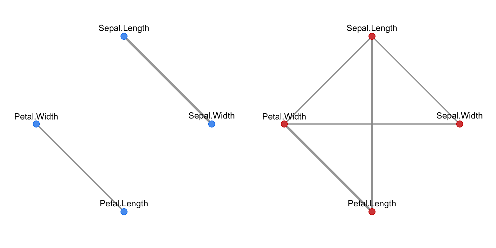
plot(mod, what = "adjacency")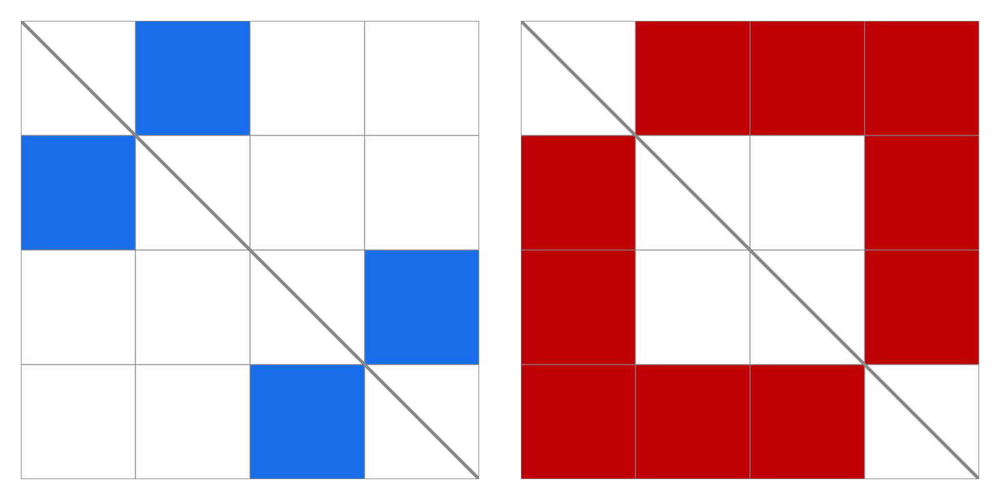
plot(mod, what = "classification")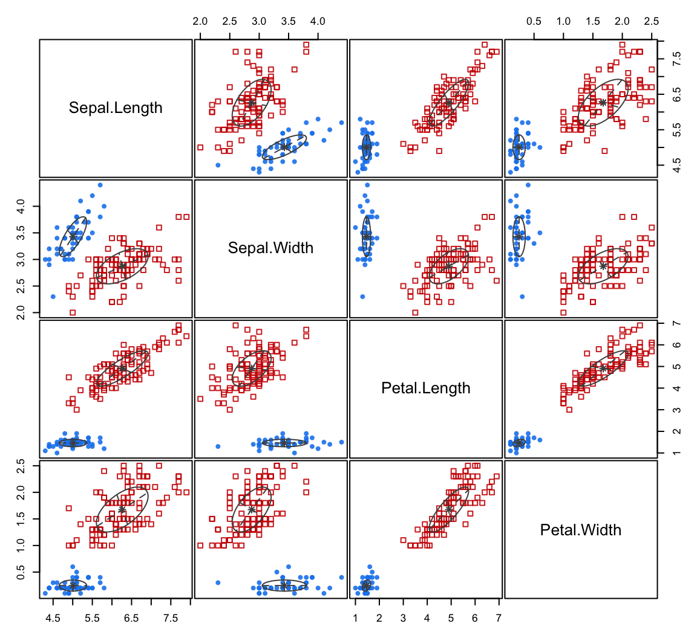
plot(mod, what = "common")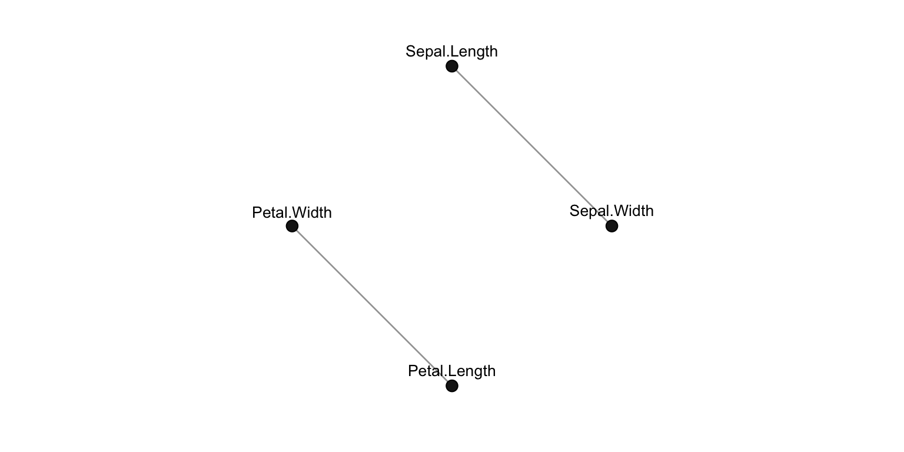
A complex simulated data example
N = 500
V = 20
tau = c(0.3, 0.7)
Nk = rowSums( rmultinom(N, 1, tau) )
class = rep(1:2, Nk)
sigma1 = rWishart(1, V+1, diag(V))[,,1]
mu1 = rep(0, V)
mu2 = rnorm(V, 0.5, 2)
x1 = MASS::mvrnorm(Nk[1], mu1, sigma1)
x2 = matrix(NA, Nk[2], V)
x2[,1] = rnorm(Nk[2])
for(j in 2:V)
x2[,j] = x2[,j-1] + rnorm(Nk[2], mu2[j], sd = 0.5)
x = rbind(x1, x2)
colnames(x) = paste0("x", 1:ncol(x))
mod = mixGGM(x, K = 1:4, model = "concentration",
penalty = "ebic", beta = 0.5)
summary(mod)
## ── Mixture of Gaussian graphical models ────────────────────
##
## Data dimensions = 500 x 20
## Model = concentration
## Search = forward-stepwise
## Penalty = ebic
##
## Log-likelihood Pen. log-likelihood df BIC
## -13384.86 -13818.17 152 -27714.33
##
## Graphs:
## [,,1]
## x1 ◯ ◯ ◯ ◉ ◯ ◯ ◯ ◯ ◯ ◯ ◉ ◯ ◯ ◯ ◯ ◯ ◉ ◉ ◯ ◯
## x2 ◯ ◯ ◯ ◉ ◯ ◯ ◯ ◯ ◯ ◯ ◯ ◉ ◯ ◉ ◉ ◯ ◯ ◉ ◯ ◯
## x3 ◯ ◯ ◯ ◯ ◯ ◯ ◉ ◯ ◯ ◯ ◯ ◉ ◯ ◯ ◉ ◯ ◯ ◯ ◉ ◉
## x4 ◉ ◉ ◯ ◯ ◯ ◯ ◉ ◯ ◯ ◉ ◯ ◉ ◯ ◯ ◯ ◯ ◯ ◉ ◯ ◉
## x5 ◯ ◯ ◯ ◯ ◯ ◯ ◯ ◉ ◯ ◯ ◉ ◯ ◯ ◉ ◯ ◯ ◯ ◯ ◯ ◯
## x6 ◯ ◯ ◯ ◯ ◯ ◯ ◯ ◉ ◉ ◉ ◯ ◯ ◯ ◯ ◯ ◯ ◉ ◯ ◯ ◯
## x7 ◯ ◯ ◉ ◉ ◯ ◯ ◯ ◯ ◯ ◉ ◉ ◯ ◯ ◯ ◉ ◯ ◯ ◯ ◉ ◯
## x8 ◯ ◯ ◯ ◯ ◉ ◉ ◯ ◯ ◯ ◯ ◯ ◯ ◯ ◯ ◯ ◯ ◉ ◯ ◉ ◯
## x9 ◯ ◯ ◯ ◯ ◯ ◉ ◯ ◯ ◯ ◉ ◉ ◯ ◯ ◉ ◯ ◯ ◯ ◯ ◯ ◯
## x10 ◯ ◯ ◯ ◉ ◯ ◉ ◉ ◯ ◉ ◯ ◉ ◯ ◯ ◯ ◉ ◯ ◯ ◉ ◯ ◉
## x11 ◉ ◯ ◯ ◯ ◉ ◯ ◉ ◯ ◉ ◉ ◯ ◯ ◉ ◉ ◯ ◯ ◉ ◉ ◯ ◯
## x12 ◯ ◉ ◉ ◉ ◯ ◯ ◯ ◯ ◯ ◯ ◯ ◯ ◯ ◉ ◯ ◯ ◯ ◉ ◯ ◯
## x13 ◯ ◯ ◯ ◯ ◯ ◯ ◯ ◯ ◯ ◯ ◉ ◯ ◯ ◯ ◯ ◯ ◯ ◯ ◯ ◯
## x14 ◯ ◉ ◯ ◯ ◉ ◯ ◯ ◯ ◉ ◯ ◉ ◉ ◯ ◯ ◯ ◯ ◯ ◯ ◯ ◯
## x15 ◯ ◉ ◉ ◯ ◯ ◯ ◉ ◯ ◯ ◉ ◯ ◯ ◯ ◯ ◯ ◯ ◯ ◯ ◉ ◉
## x16 ◯ ◯ ◯ ◯ ◯ ◯ ◯ ◯ ◯ ◯ ◯ ◯ ◯ ◯ ◯ ◯ ◉ ◉ ◯ ◉
## x17 ◉ ◯ ◯ ◯ ◯ ◉ ◯ ◉ ◯ ◯ ◉ ◯ ◯ ◯ ◯ ◉ ◯ ◯ ◯ ◯
## x18 ◉ ◉ ◯ ◉ ◯ ◯ ◯ ◯ ◯ ◉ ◉ ◉ ◯ ◯ ◯ ◉ ◯ ◯ ◉ ◉
## x19 ◯ ◯ ◉ ◯ ◯ ◯ ◉ ◉ ◯ ◯ ◯ ◯ ◯ ◯ ◉ ◯ ◯ ◉ ◯ ◯
## x20 ◯ ◯ ◉ ◉ ◯ ◯ ◯ ◯ ◯ ◉ ◯ ◯ ◯ ◯ ◉ ◉ ◯ ◉ ◯ ◯
## [,,2]
## x1 ◯ ◉ ◯ ◯ ◯ ◯ ◯ ◯ ◯ ◯ ◯ ◯ ◯ ◯ ◯ ◯ ◯ ◯ ◯ ◯
## x2 ◉ ◯ ◉ ◯ ◯ ◯ ◯ ◯ ◯ ◯ ◯ ◯ ◯ ◯ ◯ ◯ ◯ ◯ ◯ ◯
## x3 ◯ ◉ ◯ ◉ ◯ ◯ ◯ ◯ ◯ ◯ ◯ ◯ ◯ ◯ ◯ ◯ ◯ ◯ ◯ ◯
## x4 ◯ ◯ ◉ ◯ ◉ ◯ ◯ ◯ ◯ ◯ ◯ ◯ ◯ ◯ ◯ ◯ ◯ ◯ ◯ ◯
## x5 ◯ ◯ ◯ ◉ ◯ ◉ ◯ ◯ ◯ ◯ ◯ ◯ ◯ ◯ ◯ ◯ ◯ ◯ ◯ ◯
## x6 ◯ ◯ ◯ ◯ ◉ ◯ ◉ ◯ ◯ ◯ ◯ ◯ ◯ ◯ ◯ ◯ ◯ ◯ ◯ ◯
## x7 ◯ ◯ ◯ ◯ ◯ ◉ ◯ ◉ ◯ ◯ ◯ ◯ ◯ ◯ ◯ ◯ ◯ ◯ ◯ ◯
## x8 ◯ ◯ ◯ ◯ ◯ ◯ ◉ ◯ ◉ ◯ ◯ ◯ ◯ ◯ ◯ ◯ ◯ ◯ ◯ ◯
## x9 ◯ ◯ ◯ ◯ ◯ ◯ ◯ ◉ ◯ ◉ ◯ ◯ ◯ ◯ ◯ ◯ ◯ ◯ ◯ ◯
## x10 ◯ ◯ ◯ ◯ ◯ ◯ ◯ ◯ ◉ ◯ ◉ ◯ ◯ ◯ ◯ ◯ ◯ ◯ ◯ ◯
## x11 ◯ ◯ ◯ ◯ ◯ ◯ ◯ ◯ ◯ ◉ ◯ ◉ ◯ ◯ ◯ ◯ ◯ ◯ ◯ ◯
## x12 ◯ ◯ ◯ ◯ ◯ ◯ ◯ ◯ ◯ ◯ ◉ ◯ ◉ ◯ ◯ ◯ ◯ ◯ ◯ ◯
## x13 ◯ ◯ ◯ ◯ ◯ ◯ ◯ ◯ ◯ ◯ ◯ ◉ ◯ ◉ ◯ ◯ ◯ ◯ ◯ ◯
## x14 ◯ ◯ ◯ ◯ ◯ ◯ ◯ ◯ ◯ ◯ ◯ ◯ ◉ ◯ ◉ ◯ ◯ ◯ ◯ ◯
## x15 ◯ ◯ ◯ ◯ ◯ ◯ ◯ ◯ ◯ ◯ ◯ ◯ ◯ ◉ ◯ ◉ ◯ ◯ ◯ ◯
## x16 ◯ ◯ ◯ ◯ ◯ ◯ ◯ ◯ ◯ ◯ ◯ ◯ ◯ ◯ ◉ ◯ ◉ ◯ ◯ ◯
## x17 ◯ ◯ ◯ ◯ ◯ ◯ ◯ ◯ ◯ ◯ ◯ ◯ ◯ ◯ ◯ ◉ ◯ ◉ ◯ ◯
## x18 ◯ ◯ ◯ ◯ ◯ ◯ ◯ ◯ ◯ ◯ ◯ ◯ ◯ ◯ ◯ ◯ ◉ ◯ ◉ ◯
## x19 ◯ ◯ ◯ ◯ ◯ ◯ ◯ ◯ ◯ ◯ ◯ ◯ ◯ ◯ ◯ ◯ ◯ ◉ ◯ ◉
## x20 ◯ ◯ ◯ ◯ ◯ ◯ ◯ ◯ ◯ ◯ ◯ ◯ ◯ ◯ ◯ ◯ ◯ ◯ ◉ ◯
plot(mod, what = "graph")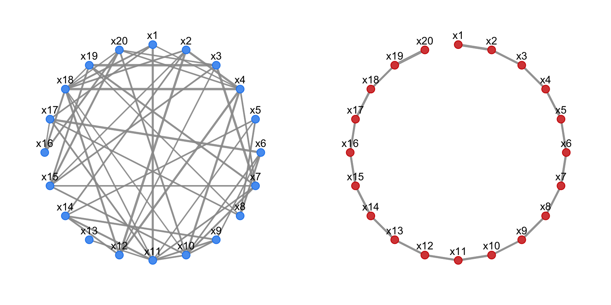
Fit a mixture of covariance graph models
Wine data
data(wine, package = "gclus")
mod = mixGGM(wine[,-1], K = 1:4, model = "covariance",
penalty = "erdos", beta = 0.01)
summary(mod, graphs = TRUE)
## ── Mixture of Gaussian graphical models ────────────────────
##
## Data dimensions = 178 x 13
## Model = covariance
## Search = forward-stepwise
## Penalty = erdos
##
## Log-likelihood Pen. log-likelihood df BIC
## -3049.506 -3175.926 107 -6653.463
##
## Graphs:
## [,,1]
## Alcohol ◯ ◯ ◯ ◯ ◯ ◯ ◯ ◯ ◯ ◯ ◯ ◯ ◯
## Malic ◯ ◯ ◯ ◯ ◯ ◯ ◯ ◯ ◯ ◯ ◯ ◯ ◯
## Ash ◯ ◯ ◯ ◯ ◯ ◯ ◯ ◯ ◯ ◯ ◯ ◯ ◯
## Alcalinity ◯ ◯ ◯ ◯ ◉ ◯ ◯ ◯ ◯ ◯ ◯ ◯ ◯
## Magnesium ◯ ◯ ◯ ◉ ◯ ◯ ◯ ◯ ◯ ◯ ◯ ◯ ◯
## Phenols ◯ ◯ ◯ ◯ ◯ ◯ ◉ ◯ ◯ ◉ ◯ ◯ ◯
## Flavanoids ◯ ◯ ◯ ◯ ◯ ◉ ◯ ◯ ◯ ◉ ◯ ◯ ◯
## Nonflavanoid ◯ ◯ ◯ ◯ ◯ ◯ ◯ ◯ ◯ ◯ ◯ ◯ ◯
## Proanthocyanins ◯ ◯ ◯ ◯ ◯ ◯ ◯ ◯ ◯ ◯ ◯ ◯ ◯
## Intensity ◯ ◯ ◯ ◯ ◯ ◉ ◉ ◯ ◯ ◯ ◯ ◯ ◉
## Hue ◯ ◯ ◯ ◯ ◯ ◯ ◯ ◯ ◯ ◯ ◯ ◯ ◯
## OD280 ◯ ◯ ◯ ◯ ◯ ◯ ◯ ◯ ◯ ◯ ◯ ◯ ◯
## Proline ◯ ◯ ◯ ◯ ◯ ◯ ◯ ◯ ◯ ◉ ◯ ◯ ◯
## [,,2]
## Alcohol ◯ ◯ ◯ ◯ ◯ ◯ ◯ ◯ ◯ ◉ ◯ ◯ ◯
## Malic ◯ ◯ ◯ ◯ ◯ ◯ ◯ ◯ ◯ ◯ ◯ ◯ ◯
## Ash ◯ ◯ ◯ ◉ ◯ ◯ ◯ ◯ ◯ ◯ ◯ ◯ ◯
## Alcalinity ◯ ◯ ◉ ◯ ◯ ◯ ◯ ◯ ◯ ◯ ◯ ◯ ◯
## Magnesium ◯ ◯ ◯ ◯ ◯ ◯ ◉ ◉ ◉ ◯ ◯ ◯ ◉
## Phenols ◯ ◯ ◯ ◯ ◯ ◯ ◯ ◉ ◉ ◯ ◯ ◯ ◯
## Flavanoids ◯ ◯ ◯ ◯ ◉ ◯ ◯ ◉ ◉ ◯ ◯ ◯ ◯
## Nonflavanoid ◯ ◯ ◯ ◯ ◉ ◉ ◉ ◯ ◯ ◯ ◯ ◯ ◯
## Proanthocyanins ◯ ◯ ◯ ◯ ◉ ◉ ◉ ◯ ◯ ◯ ◯ ◯ ◉
## Intensity ◉ ◯ ◯ ◯ ◯ ◯ ◯ ◯ ◯ ◯ ◉ ◯ ◯
## Hue ◯ ◯ ◯ ◯ ◯ ◯ ◯ ◯ ◯ ◉ ◯ ◉ ◯
## OD280 ◯ ◯ ◯ ◯ ◯ ◯ ◯ ◯ ◯ ◯ ◉ ◯ ◯
## Proline ◯ ◯ ◯ ◯ ◉ ◯ ◯ ◯ ◉ ◯ ◯ ◯ ◯
## [,,3]
## Alcohol ◯ ◯ ◯ ◯ ◯ ◯ ◯ ◯ ◯ ◯ ◯ ◯ ◯
## Malic ◯ ◯ ◯ ◯ ◯ ◯ ◯ ◯ ◯ ◯ ◉ ◯ ◯
## Ash ◯ ◯ ◯ ◉ ◉ ◯ ◯ ◯ ◯ ◯ ◯ ◯ ◯
## Alcalinity ◯ ◯ ◉ ◯ ◯ ◯ ◯ ◯ ◯ ◯ ◯ ◯ ◯
## Magnesium ◯ ◯ ◉ ◯ ◯ ◯ ◯ ◯ ◯ ◯ ◯ ◯ ◯
## Phenols ◯ ◯ ◯ ◯ ◯ ◯ ◉ ◉ ◯ ◯ ◯ ◯ ◯
## Flavanoids ◯ ◯ ◯ ◯ ◯ ◉ ◯ ◯ ◉ ◉ ◯ ◉ ◯
## Nonflavanoid ◯ ◯ ◯ ◯ ◯ ◉ ◯ ◯ ◯ ◯ ◯ ◯ ◯
## Proanthocyanins ◯ ◯ ◯ ◯ ◯ ◯ ◉ ◯ ◯ ◯ ◯ ◉ ◯
## Intensity ◯ ◯ ◯ ◯ ◯ ◯ ◉ ◯ ◯ ◯ ◯ ◯ ◯
## Hue ◯ ◉ ◯ ◯ ◯ ◯ ◯ ◯ ◯ ◯ ◯ ◯ ◯
## OD280 ◯ ◯ ◯ ◯ ◯ ◯ ◉ ◯ ◉ ◯ ◯ ◯ ◯
## Proline ◯ ◯ ◯ ◯ ◯ ◯ ◯ ◯ ◯ ◯ ◯ ◯ ◯
plot(mod, what = "graph")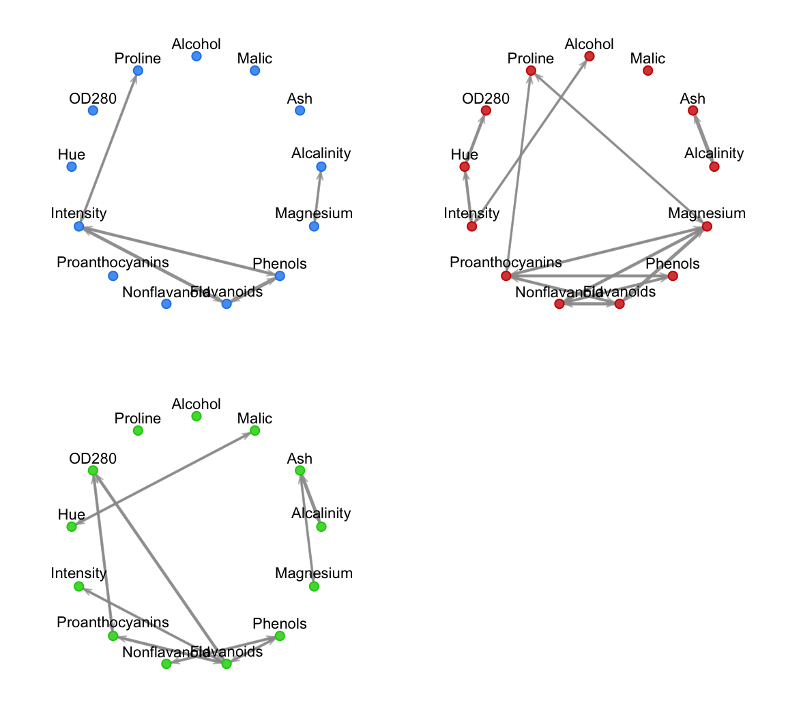
plot(mod, what = "adjacency")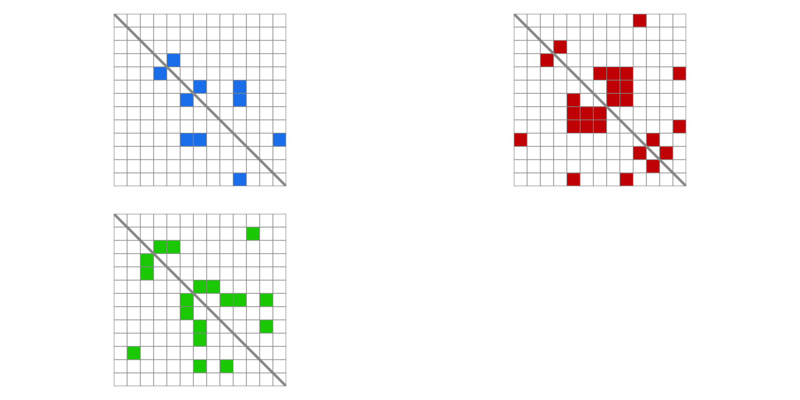
plot(mod, what = "classification", dimens = 1:4)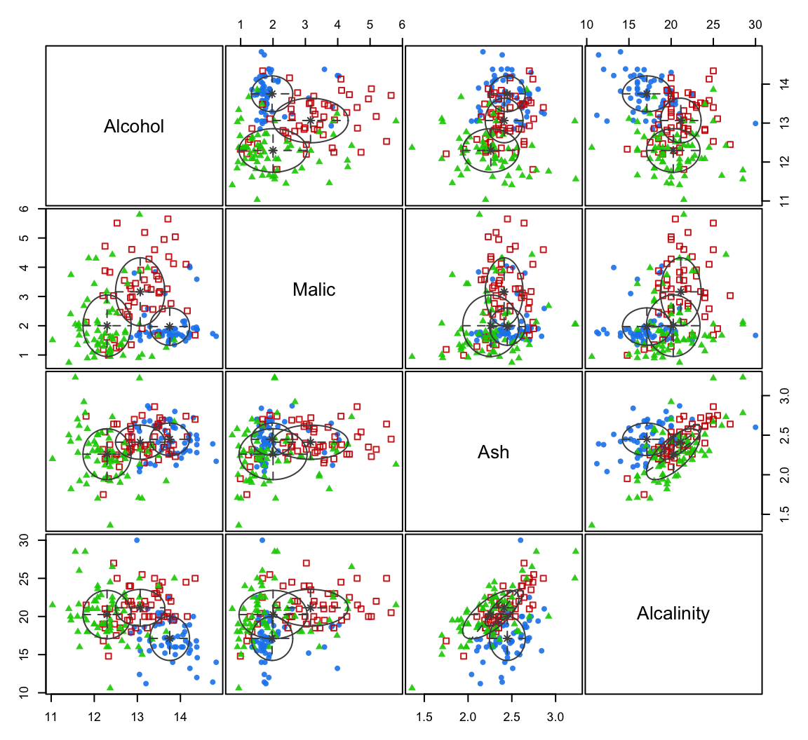
table(wine$Class, mod$classification)
##
## 1 2 3
## 1 57 0 2
## 2 1 5 65
## 3 0 48 0
mclust::adjustedRandIndex(wine$Class, mod$classification)
## [1] 0.8667189A simple simulated data example
N = 200
tau = c(0.3, 0.7)
Nk = rowSums( rmultinom(N, 1, tau) )
class = rep(1:2, Nk)
sigma1 = diag(2) # independent variables
sigma2 = matrix( c(1,0.9,0.9,1), 2,2 ) # correlated variables
mu1 = c(0, 0)
mu2 = c(2, 3)
x = rbind(MASS::mvrnorm(Nk[1], mu1, sigma1),
MASS::mvrnorm(Nk[2], mu2, sigma2))
colnames(x) = paste0("x", 1:ncol(x))
mod = mixGGM(x, model = "covariance")
summary(mod, graphs = TRUE, parameters = TRUE)
## ── Mixture of Gaussian graphical models ────────────────────
##
## Data dimensions = 200 x 2
## Model = covariance
## Search = forward-stepwise
## Penalty = bic
##
## Log-likelihood Pen. log-likelihood df BIC
## -549.7835 -552.4326 10 -1152.55
##
## Graphs:
## [,,1]
## x1 ◯ ◯
## x2 ◯ ◯
## [,,2]
## x1 ◯ ◉
## x2 ◉ ◯
##
## Mixing probabilities:
## [1] 0.2701669 0.7298331
##
## Means:
## 1 2
## x1 -0.04346726 1.948327
## x2 0.02859949 2.939030
##
## Covariances:
## [,,1]
## x1 x2
## x1 1.059458 0.0000000
## x2 0.000000 0.9923883
## [,,2]
## x1 x2
## x1 1.059034 0.9158390
## x2 0.915839 0.9822129
plot(mod, what = "graph")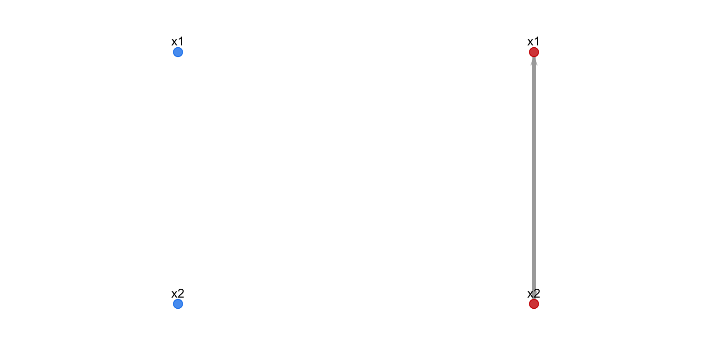
plot(mod, what = "adjacency")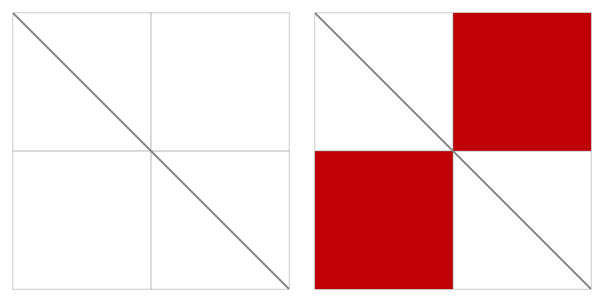
plot(mod, what = "classification")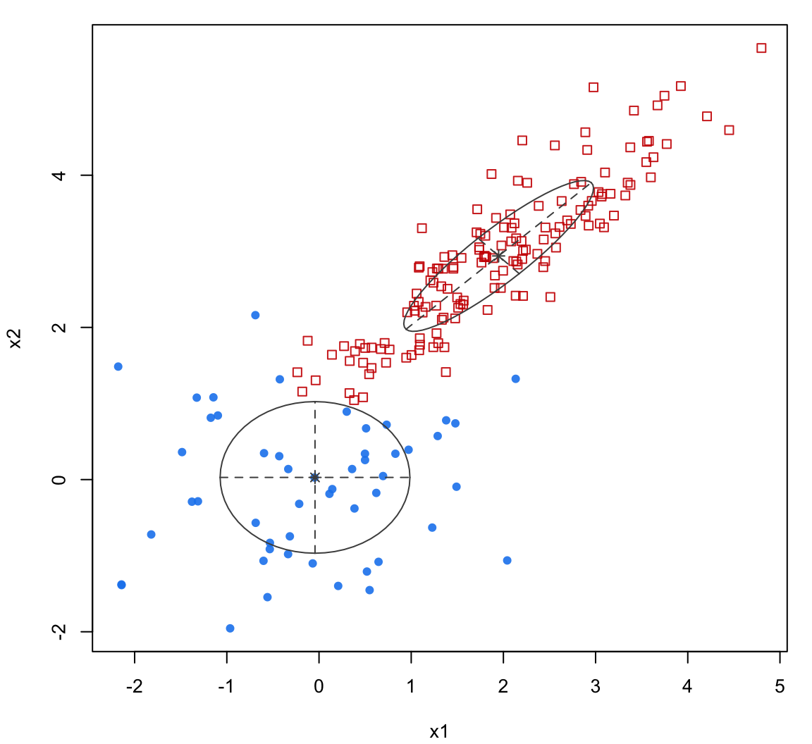
References
Fop M, Scrucca L, Murphy TB (2019). “Model-based clustering with sparse covariance matrices.” Statistics and Computing, 29(4), 791–819. ISSN 1573-1375. doi:10.1007/s11222-018-9838-y.
devtools::session_info()
## ─ Session info ───────────────────────────────────────────────────────────────
## setting value
## version R version 4.6.2 (2026-10-29)
## os macOS Golden Gate 27.2.1
## system aarch64, darwin23
## ui X11
## language en
## collate en_US.UTF-8
## ctype en_US.UTF-8
## tz Europe/Rome
## date 2026-11-18
## pandoc 3.14 @ /opt/homebrew/bin/ (via rmarkdown)
## quarto 1.11.9 @ /usr/local/bin/quarto
##
## ─ Packages ───────────────────────────────────────────────────────────────────
## package * version date (UTC) lib source
## cachem 1.1.0 2024-05-16 [1] CRAN (R 4.6.0)
## cli 3.6.6 2026-04-09 [1] CRAN (R 4.6.0)
## coda 0.19-4.1 2024-01-31 [1] CRAN (R 4.6.0)
## codetools 0.2-20 2024-03-31 [2] CRAN (R 4.6.2)
## crayon 1.5.3 2024-06-20 [1] CRAN (R 4.6.0)
## devtools 2.5.2 2026-04-30 [1] CRAN (R 4.6.0)
## digest 0.6.39 2025-11-19 [1] CRAN (R 4.6.0)
## ellipsis 0.3.3 2026-04-04 [1] CRAN (R 4.6.0)
## evaluate 1.0.5 2025-08-27 [1] CRAN (R 4.6.0)
## fastmap 1.2.0 2024-05-15 [1] CRAN (R 4.6.0)
## foreach 1.5.2 2022-02-02 [1] CRAN (R 4.6.0)
## fs 2.1.0 2026-04-18 [1] CRAN (R 4.6.0)
## glue 1.8.1 2026-04-17 [1] CRAN (R 4.6.0)
## htmltools 0.5.9 2025-12-04 [1] CRAN (R 4.6.0)
## iterators 1.0.14 2022-02-05 [1] CRAN (R 4.6.0)
## jsonlite 2.0.0 2025-03-27 [1] CRAN (R 4.6.0)
## knitr 1.52 2026-09-06 [1] CRAN (R 4.6.1)
## lattice 0.23-1 2026-08-12 [1] CRAN (R 4.6.1)
## lifecycle 1.0.5 2026-01-08 [1] CRAN (R 4.6.0)
## magrittr 2.0.5 2026-04-04 [1] CRAN (R 4.6.0)
## MASS 7.3-66 2026-07-15 [2] CRAN (R 4.6.2)
## mclust 6.1.4 2026-11-18 [1] CRAN (R 4.6.2)
## memoise 2.0.1 2021-11-26 [1] CRAN (R 4.6.0)
## mixggm * 1.2 2026-11-18 [1] CRAN (R 4.6.2)
## network 1.20.0 2026-02-07 [1] CRAN (R 4.6.0)
## otel 0.2.0 2025-08-29 [1] CRAN (R 4.6.0)
## pillar 1.11.1 2025-09-17 [1] CRAN (R 4.6.0)
## pkgbuild 1.4.8 2025-05-26 [1] CRAN (R 4.6.0)
## pkgconfig 2.0.3 2019-09-22 [1] CRAN (R 4.6.0)
## pkgload 1.5.3 2026-06-15 [1] CRAN (R 4.6.0)
## purrr 1.2.2 2026-04-10 [1] CRAN (R 4.6.0)
## R6 2.6.1 2025-02-15 [1] CRAN (R 4.6.0)
## Rcpp 1.1.2 2026-07-05 [1] CRAN (R 4.6.1)
## rlang 1.3.0 2026-07-05 [1] CRAN (R 4.6.1)
## rmarkdown 2.32 2026-09-01 [1] CRAN (R 4.6.1)
## rstudioapi 0.19.0 2026-06-11 [1] CRAN (R 4.6.0)
## sessioninfo 1.2.4 2026-06-04 [1] CRAN (R 4.6.0)
## statnet.common 4.13.0 2025-12-16 [1] CRAN (R 4.6.0)
## tibble 3.3.1 2026-01-11 [1] CRAN (R 4.6.0)
## usethis 3.2.2 2026-09-10 [1] CRAN (R 4.6.1)
## vctrs 0.7.3 2026-04-11 [1] CRAN (R 4.6.0)
## xfun 0.62 2026-10-16 [1] CRAN (R 4.6.1)
## yaml 2.3.12 2025-12-10 [1] CRAN (R 4.6.0)
##
## [1] /Library/Frameworks/R.framework/Rlib
## [2] /Library/Frameworks/R.framework/Versions/4.6/Resources/library
## * ── Packages attached to the search path.
##
## ──────────────────────────────────────────────────────────────────────────────